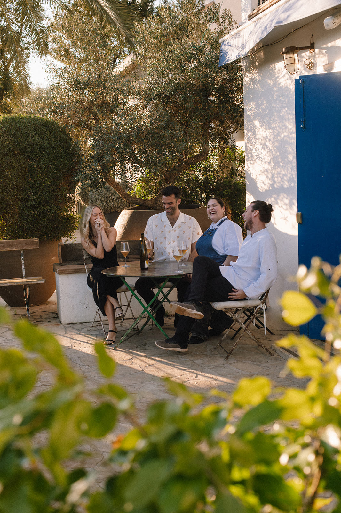
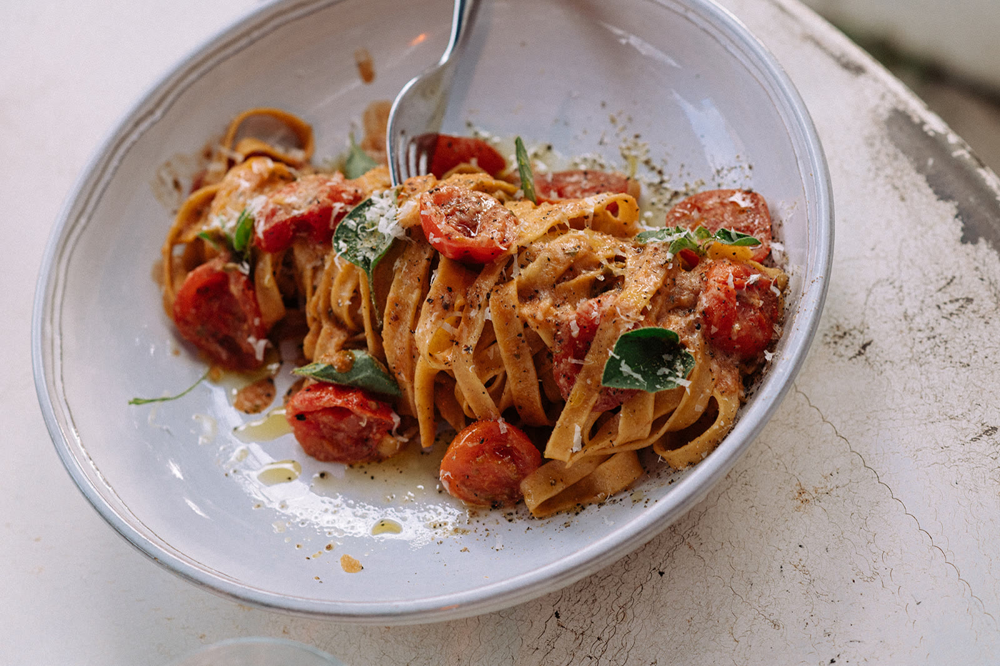

Music / selector instinct
Music, moments, memories.
Music was never a side note for Tiago. It has always been a separate current: records, islands, African heat, strange finds, long nights, and the instinct to follow a sound until it opens a door.
Placeholder selections
Temporary sound sketches until Tiago sends the real selections: African heat, island rhythm, after-hours curiosity.
- 01 / Island warm-up
- 02 / Rhythm lift
- 03 / Green coast
- 04 / Late terrace
- 05 / After-hours memory
Sound instinct
African sounds, island trouble, no boring selections.
Tiago has always been connected to music. Not as background, not as a fashionable add-on, and not because every creative person suddenly needs a DJ sentence. Music is its own thing for him: a private obsession, a social passport, a way to travel without behaving like a tourist.
His ears keep pulling him toward African sounds: funky, percussive, warm, strange in the best way, and built for bodies before algorithms. It is music with dust on its shoes and sunlight in its bones. The kind of sound that makes people move before they ask what it is.
In 2025, Tiago spent half a year in Zanzibar and connected with whynot.club.zanzibar. The island got under his skin fast: the pace, the people, the sea air, the records, the drums, the feeling that the night could keep unfolding if nobody interrupted it with a plan.
For a moment, Zanzibar almost won. Tiago fell hard enough for the island and its sound that putting down roots there was a real thought, not a holiday fantasy. In the end, Ibiza won the battle of the islands. But the African sound stayed with him: loose, alive, generous, never flat.
Selector notes
What catches his ear.
- GroovePercussion that makes sense in the body before the brain.
- WarmthSounds with sun, dust, swing, and a little imperfection.
- SurpriseRecords that do not behave like the obvious choice.
- After-hoursThe slower strange things people remember later.



Real selections, Zanzibar notes, and proper music stories are coming next.
Send music input Write to Tiago